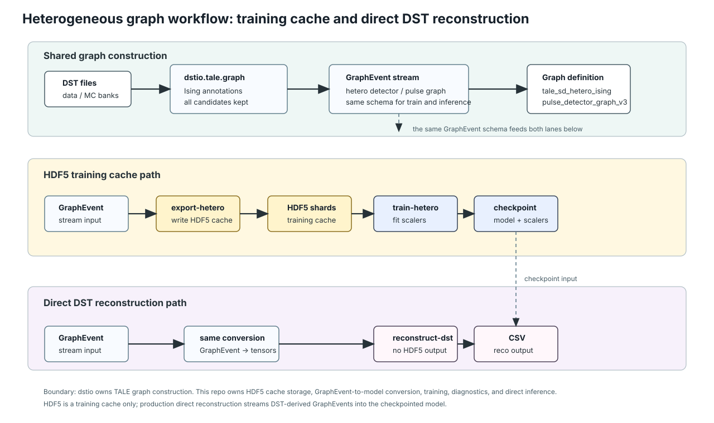
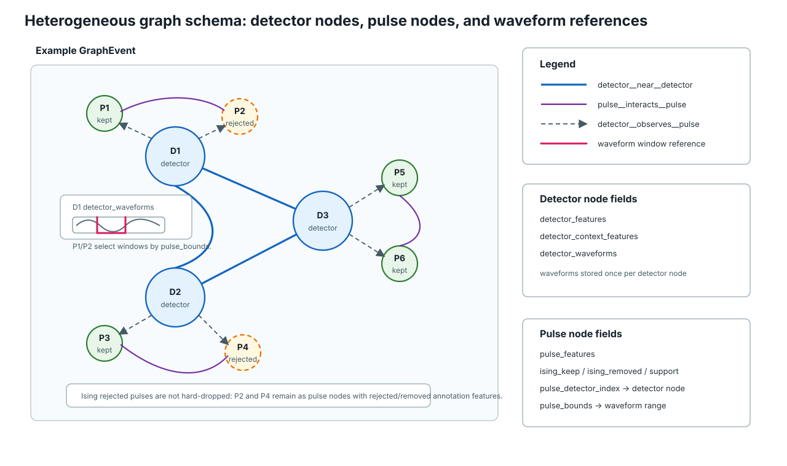

Heterogeneous DST Reconstruction Workflow
The heterogeneous path is the current path for training a model that can later reconstruct DST files directly.
It uses dstio.tale.graph for graph semantics and keeps the GNN repository responsible for HDF5 training cache, model input conversion, training, diagnostics, and direct inference.
The first figure is the workflow diagram. It separates the HDF5 training-cache path from the direct DST reconstruction path.
{kind=link}

Detector waveforms are stored once on detector nodes. Pulse nodes keep pulse_detector_index and pulse_bounds so the model can relate each pulse to the detector waveform without duplicating that waveform.
Graph schema
The second figure is the graph schema diagram. It shows the actual node and edge types used inside one GraphEvent.
Detector nodes and pulse nodes are different node types.
Detector waveforms are stored on detector nodes once, and pulse nodes refer to a waveform segment using pulse_detector_index and pulse_bounds.
Both Ising-kept and Ising-rejected pulse candidates remain present in the ML graph.
{kind=link}

Detector-detector, pulse-pulse, and detector-pulse relations are separate edge types. Ising-rejected pulse candidates are annotated and kept as input rather than hard-dropped.
dstio.tale.graph.iter_graphs emits GraphEvent objects using
tale_sd_hetero_ising_pulse_detector_graph_v1.
The default ML graph policy is node_policy="all_candidates_with_ising":
Ising-rejected pulse candidates remain in the graph and carry Ising annotation features.
Use node_policy="ising_kept" only for reconstruction-cleaned subsets.
The node and relation types are:
Type |
Stored fields |
|---|---|
Detector node |
|
Pulse node |
|
Relations |
|
The core-relative pulse features are valid only when the Ising reference core exists.
Training export should therefore use --require-reference-core unless a separate diagnostic dataset is being made.
Training cache path
export-hetero writes HDF5 graph shards for repeated training reads.
This HDF5 is a cache, not the final reconstruction interface.
DST
-> talesd-gnn export-hetero
-> dstio.tale.graph.iter_graphs
-> hetero_graph_io.py
-> heterogeneous HDF5 shards
train-hetero then reads those shards, fits scalers on the training split, trains the heterogeneous model, and saves a checkpoint.
Direct reconstruction path
reconstruct-dst reads DST files directly and uses the same graph schema and checkpoint scalers as train-hetero.
It does not write an intermediate HDF5 graph.
DST
-> talesd-gnn reconstruct-dst
-> dstio.tale.graph.iter_graphs
-> hetero_data.sample_to_hetero_data
-> MinimalHeteroTaleSdGNN checkpoint
-> reconstruction CSV
The direct path is the intended path for large one-pass data and MC reconstruction after the heterogeneous model has been trained.